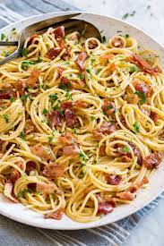

How to Cook Pasta Carbonara
Ingredients:

- 8-10 slices bacon, cut into 1/2-inch pieces
- 8 1/2 cups water
- 4 cloves garlic
- 1 lb spaghetti or linguine
- 1 1/4 cups finely grated parmesan cheese
- 3 large eggs
- 1 large egg yolk
- 1 tsp each salt and pepper
- Chopped fresh parsley
Instructions:
- Add bacon 1/2 cup of the water to a large non-stick skillet and bring to a simmer over medium-high heat.
- Allow to simmer until water evaporates about 6-7 minutes, then reduce heat to medium-low and continue to cook until bacon is brown and crisp, about 6 - 8 minutes longer.
- Place a fine mesh strainer over a bowl then pour bacon into strainer while reserving about 1 tsp of the rendered fat in pan. Return pan to heat and sauté garlic about 30 seconds, until fragrant and lightly golden.
- Pour into a medium mixing bowl then add 1 Tbsp rendered bacon fat (drippings in bowl set under strainer) to mixing bowl with garlic. Add eggs, egg yolk, parmesan, and pepper to garlic mixture and whisk until well combined.
- Meanwhile, bring 8 cups of water to a boil in a large Dutch oven (no more than 8 cups because you want very starchy water for the sauce). Add spaghetti and salt to boiling water and cook until al dente. While pasta is boiling, set a
colander in a large bowl.
- Carefully drain al dente pasta into colander in bowl, whole reserving pasta water in bowl. Measure out 1 cup hot pasta water and discard remaining water. Immediately place pasta in now empty large bowl.
- Slowly pour and whisk 1/2 cup pasta water into egg mixture, then slowly pour mixture over pasta while tossing to coat. Add bacon and toss to combine. Season with salt if desired.
- Let pasta rest, tossing frequently, 2-4 minutes until sauce has thickened slightly and coats pasta. Thin with remaining 1/2 hot pasta water as needed. Serve immediately topped with additional parmesan and parsley.